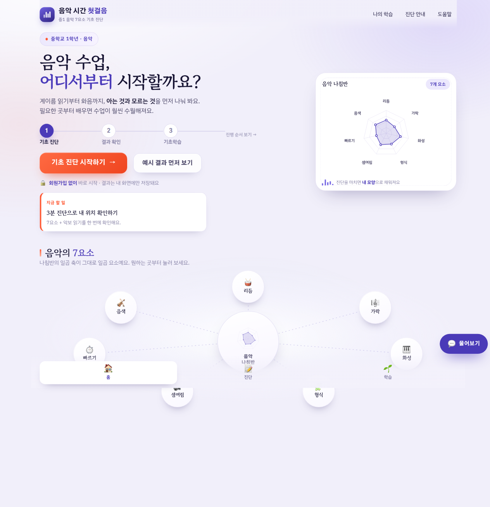

음악시간 첫걸음 · music-first-step
음악 학습의 사고회로,
어디서
끊어집니까
중학교 1학년 음악 — 사고회로의 끊긴 곳을 진단과 교정으로 잇는 도구
사고회로의 둘째 단계(부호 해독)와 다섯째 단계(점검·교정)에서 학습은 다음으로 넘어가지 못합니다. 이 둘이 비면 3·4단계는 무엇을 해도 막힙니다.
성희원
교육공학 창의개발랩 · 음악 교육공학 중간보고

한 손으로 듣는 첫 화면
교실에 들어가 누르면, 진단이 시작됩니다.
01 / 07